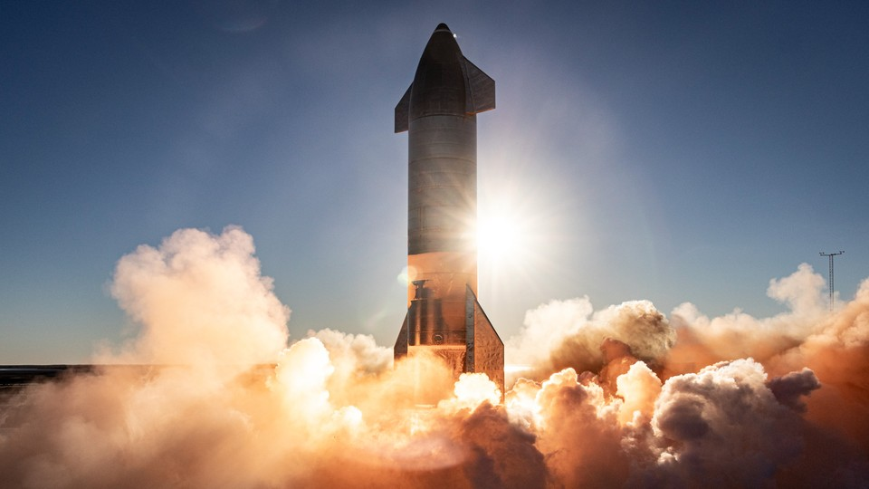
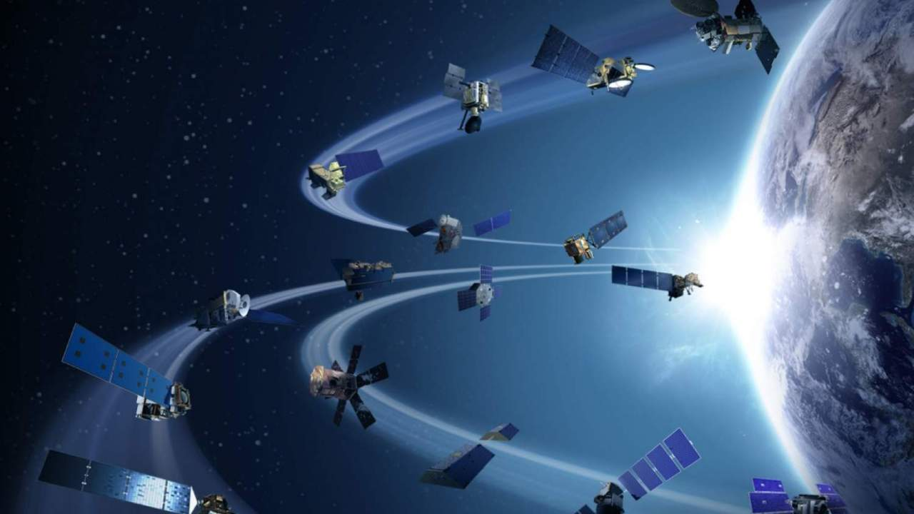

SpaceX’s Starship spacecraft and Super Heavy rocket (collectively referred to as Starship) represent a fully reusable transportation system designed to carry both crew and cargo to Earth orbit, the Moon, Mars and beyond. Starship will be the world’s most powerful launch vehicle ever developed, with the ability to carry in excess of 100 metric tonnes to Earth orbit.

Starlink

Using advanced satellites in a low orbit, Starlink enables video calls, online gaming, streaming, and other high data rate activities that historically have not been possible with satellite internet.